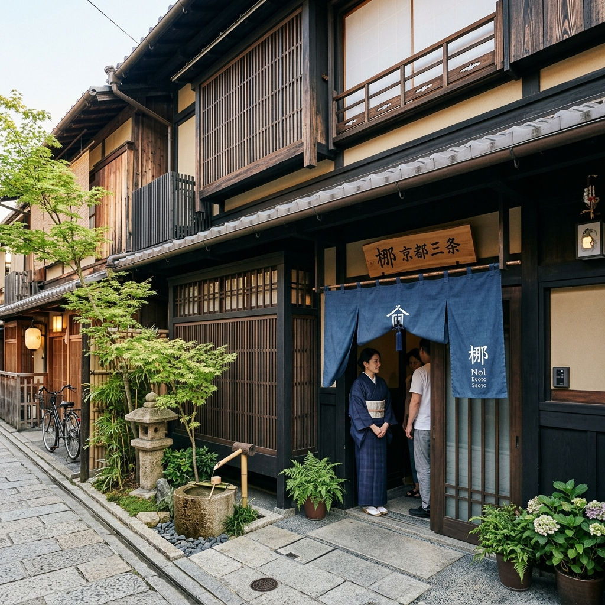
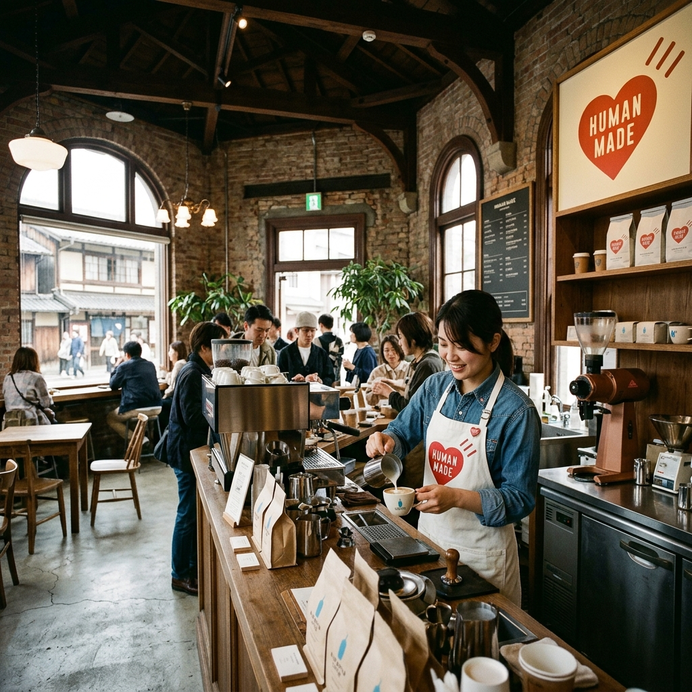
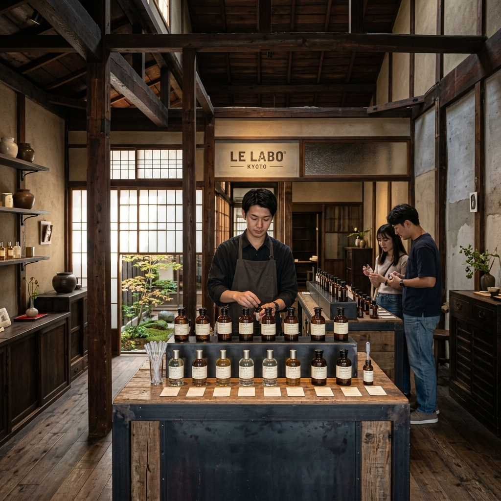

Day 01
抵達京都 · 專車直達、御金快閃與三條美學
8/3（週一）· 京都中京區
12:05
關西國際機場（KIX）降落
出關、提取行李。保持節奏緩慢，讓寶寶適應環境。
幼兒節奏
星宇航空
13:30 前後
外派接駁車 D1 · 機場直達飯店
專車直達 nol kyoto sanjo 門口。車程約 80–90 分鐘，寶寶於車上休息。
專車直達
車上補眠
15:00
辦理入住 · 休整
放下行李、換裝與尿布整理。準備展開靜謐的京都市區散步。

nol kyoto sanjo Machiya Hotel
15:40 – 16:30
【計程車快閃】御金神社 · 金運參拜
飯店門口搭計程車約 5 分鐘直達。參拜金山毘古神並購入金運御守（完美鎖定 17:00 社務所關閉前黃金窗口）。
Mikane Shrine Kyoto
金運御守
計程車 5 分
17:00 關門
16:40 – 17:30
HUMAN MADE 1928 Cafe & LE LABO KYOTO
步行散步至 HUMAN MADE 1928 Cafe by Blue Bottle Coffee 品嚐潮流咖啡，順遊 LE LABO KYOTO 美學考察（距離飯店僅 350m）。

HUMAN MADE 1928 Cafe by Blue Bottle

LE LABO KYOTO Fragrance Shop
步行推車 4 分
藍瓶咖啡
三條商圈
17:30 之後
三條商圈 · 質感超市採購與晚餐
於三條通周邊超市採購鮮乳與幼兒物資，享用京都第一餐。
✎ 當日備註
飯店、御金神社、HUMAN MADE 1928 與 LE LABO 皆在中京區，第一天以專車抵達與輕鬆快閃為主。